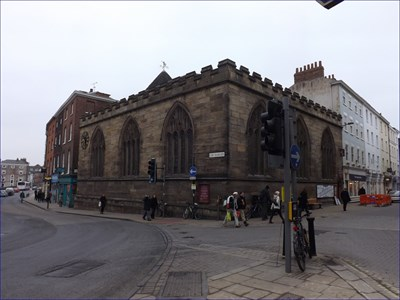
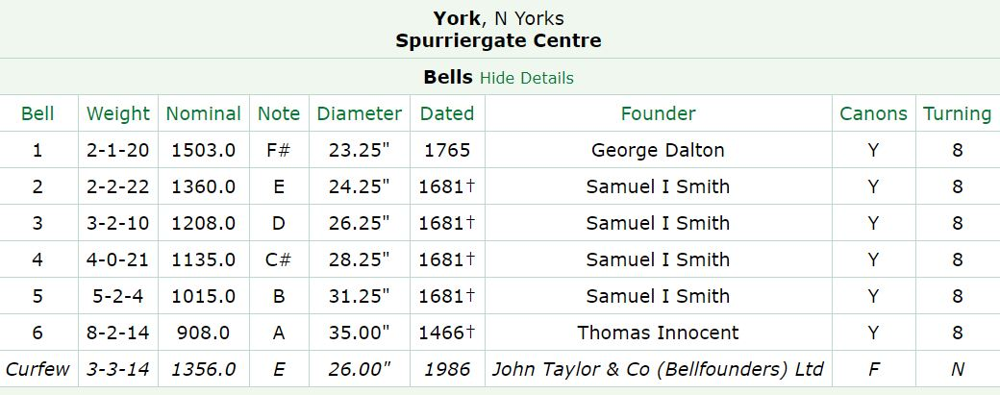
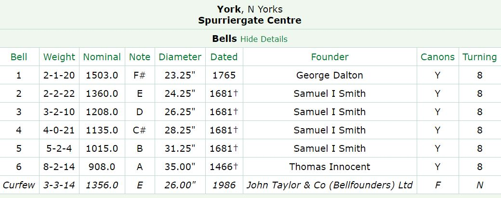

Spurriergate
Time: 13:00-14:30
For ringing at Spurriergate, we meet on campus at 12.20 or so and walk into the city together. Afterwards, we often relax by heading to 'spoons for lunch, and possibly another pub after that before going to the Evensong ringing at St Lawrences at 17:15.

Google Maps Generator by embedgooglemap.net